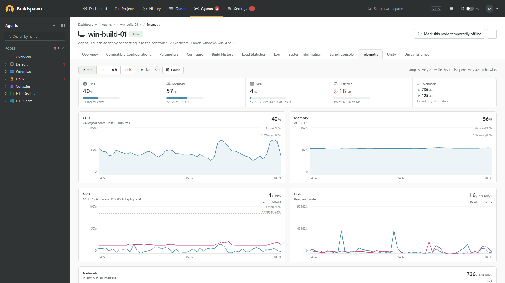
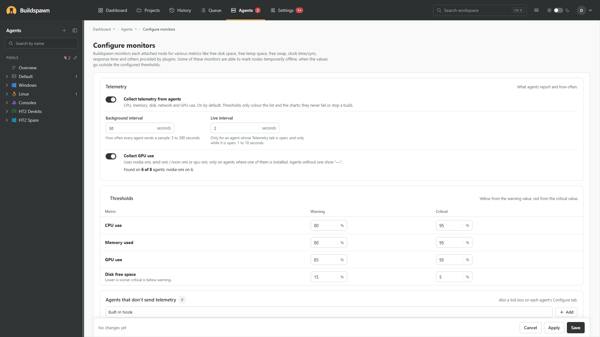

Telemetry
Telemetry is live health data from your agents: CPU, memory, disk, network and GPU. It shows which machines are busy, full or struggling, before a build fails.
How it works
Telemetry comes from the Agent Telemetry plug-in that is built into Buildspawn. Its settings page is Agents › Configure monitors, and is also listed as Agent Telemetry in Settings.
- Telemetry is on by default. Every agent sends a sample every 30 seconds.
- While someone has an agent's Telemetry tab open, that agent sends a sample every 2 seconds.
- GPU values come from the vendor's tool (
nvidia-smi,amd-smi/rocm-smiorxpu-smi). They are read only on machines that have one of these tools. Other agents show "—".
You see telemetry in three places: the live columns and expanded rows of the Agents page, the summary strip above it, and each agent's own Telemetry tab.
The agent's Telemetry tab
- Open an agent: click its name on the Agents page.
- Click the Telemetry tab. (From the Agents page, you can also open a row and click Telemetry.)

Time range
Pick how far back the charts go: 15 min, 1 h, 6 h or 24 h.
Live and Pause
- Live · 2 s means new samples arrive every 2 seconds and the charts move on.
- Click Pause to freeze the charts, for example to read a spike. Click it again to go live.
Cards and charts
| Card / chart | What it shows |
|---|---|
| CPU | Use in percent, and the number of logical cores. |
| Memory | Use in percent and in GB of the total. |
| GPU | Use, temperature and video memory (VRAM). The chart shows use and VRAM as two lines. |
| Disk free / Disk | Free space on the work drive, and read and write speed. |
| Network | Data in and out, over all network interfaces. |
The dashed lines on each chart are the Warning and Critical thresholds. A value past a line turns yellow or red.
The thresholds colour the cells and charts. On the screenshots in this guide the disk is Critical on every agent because the demo machine's D: drive is nearly full.
Configure monitors
The switch for the whole server is labelled Collect telemetry from agents. All telemetry settings are on one page. On the Agents page, click Configure monitors.

| Setting | What it does |
|---|---|
| Collect telemetry from agents | Switches telemetry on or off for the whole server. On by default. |
| Background interval | How often every agent sends a sample: 5 to 300 seconds. Default 30. |
| Live interval | How often an agent sends samples while its Telemetry tab is open: 1 to 10 seconds. Default 2. |
| Collect GPU use | Reads the GPU on agents that have a GPU tool. The page says how many agents have one. |
| Thresholds | The Warning and Critical values for CPU use, memory used, GPU use, disk and so on. Yellow from the warning value, red from the critical value. |
| Agents that don't send telemetry | A list of agents left out. Pick an agent and click Add. |
Click Save (or Apply to stay on the page).
Telemetry thresholds only colour the pages. They never fail or stop a build. The older monitors further down the page, such as Free Disk Space, can mark an agent offline when it runs low, unless you tick Don't mark agents temporarily offline.
Turn telemetry off for one agent
- Open the agent and click the Configure tab.
- In Node Properties, untick Collect telemetry from this agent. It is ticked by default (see Agent settings).
- Click Save.
The agent then shows "—" in the live columns, and it is listed under Agents that don't send telemetry on the Configure monitors page.
Tips
- Use the 24 h range to see a night of builds at once and spot machines that run out of memory.
- Lower the warning thresholds for disk on machines that keep big Perforce workspaces, so you are warned early.
- A Stale freshness means no sample came in for a while. Check that the agent is still connected.
Related pages
- The Agents page
- Agent settings: disk space thresholds and the telemetry box.
- Spot unhealthy agents